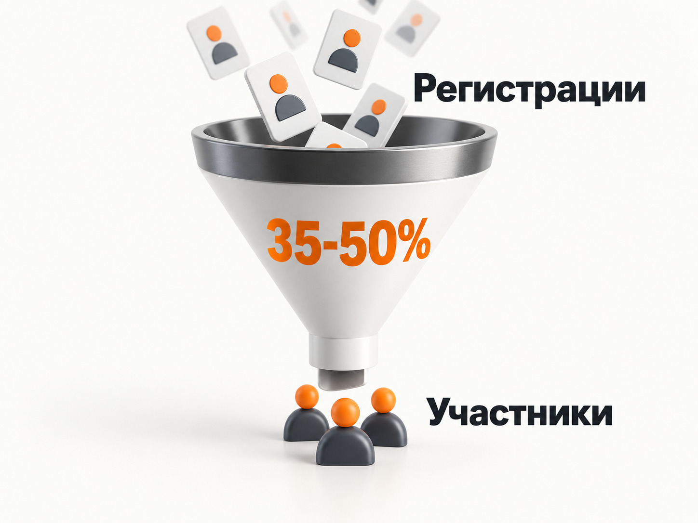

Блог о платном трафике
Продвижение бизнес-форума в 2026 году: инструкция и прогноз
Продвижение бизнес-форума я бы строил не от вопроса «где дать рекламу», а от конечной цели: сколько людей должно реально прийти на мероприятие и сколько организатор готов заплатить за одного участника.
Для офлайн-конференции недостаточно получить дешёвые регистрации. Часть зарегистрированных не придёт, часть окажется нецелевой аудиторией, а у платного мероприятия регистрация ещё не означает покупку билета.
Поэтому нормальная модель выглядит так:
реклама -> переход на сайт -> регистрация или покупка -> подтверждённый участник -> фактическое посещение
Для B2B-форумов одним из основных платных каналов я бы рассматривал Яндекс Директ: Поиск позволяет собирать уже сформированный спрос, РСЯ даёт дополнительный объём среди предпринимателей и специалистов, а ретаргетинг возвращает тех, кто изучил мероприятие, но не зарегистрировался.
Какие цифры закладывать в прогноз в 2026 году
Полноценной открытой статистики по средней стоимости регистрации на бизнес-форум в России нет. Поэтому цифру вроде «средний CPL бизнес-конференции составляет 850 ₽» я бы не использовал.
Полезнее смотреть на свежие реальные кейсы и строить несколько сценариев.
В кейсе продвижения отраслевой B2B-конференции через Яндекс Директ получили 125 регистраций со средним CPL 1 120 ₽. К маю стоимость снизилась до 725 ₽, а в последнюю неделю перед мероприятием - до 577 ₽. При этом 63% регистраций принесла РСЯ, а Поиск давал более дорогие заявки.
Для первоначального прогноза бесплатного бизнес-форума я бы использовал такие диапазоны:
| Показатель | Рабочий ориентир |
|---|---|
| CPL регистрации из Яндекс Директа | 800-1 500 ₽ |
| Сложная или очень узкая B2B-аудитория | 1 500-2 500 ₽ |
| Конверсия хорошего лендинга в регистрацию | примерно 10-15% |
| Доходимость бесплатного мероприятия | примерно 35-50% |
Это именно диапазоны для предварительного медиаплана. После первых 50-100 регистраций прогноз нужно пересчитать по фактическим данным.
Ориентир по доходимости подтверждается свежими крупными мероприятиями. У Dell Technologies Forum доля пришедших среди зарегистрированных из социальных каналов составила 49,2%. У Ozon Tech E-CODE было 14 250 регистраций и более 5 000 офлайн-участников, то есть около 35%.
Для бесплатного офлайн-форума я поэтому обычно не рассчитывал бы, что придут все зарегистрированные.

Как посчитать, сколько регистраций нужно
Начинать нужно с вместимости площадки.
Допустим, организатор хочет получить 300 человек непосредственно в зале.
Если доходимость составит 50%, понадобится примерно 600 регистраций.
Если 35% - уже около 860.
Получается:
нужные регистрации = план участников / прогнозная доходимость
Отсюда можно рассчитать рекламный бюджет.
Пример прогноза для бесплатного бизнес-форума
Если все регистрации приходится покупать через рекламу:
| Нужно людей в зале | Нужно регистраций при доходимости 35-50% | Бюджет при CPL 800-1 500 ₽ |
|---|---|---|
| 100 | 200-286 | 160 000-429 000 ₽ |
| 300 | 600-857 | 480 000-1 286 000 ₽ |
| 500 | 1 000-1 429 | 800 000-2 143 000 ₽ |
На практике весь объём обычно не приходится покупать.
Часть участников могут дать:
- собственная клиентская база;
- партнёры;
- спикеры;
- Telegram-канал;
- социальные сети;
- отраслевые сообщества;
- PR;
- органический поиск;
- повторные участники прошлых мероприятий.
Если, например, 35% регистраций организатор получает бесплатно, платной рекламе остаётся привести 65%.
Для цели в 300 человек при 700 необходимых регистрациях рекламой понадобится получить примерно 455 регистраций. При CPL 1 200 ₽ рекламный бюджет составит около 546 000 ₽.
Такой расчёт гораздо полезнее, чем выбирать бюджет в 100 000 или 500 000 ₽ просто потому, что эта сумма кажется комфортной.
Прогноз для платного бизнес-форума
У платного мероприятия считать только CPL регистрации практически бессмысленно.
Здесь нужна цепочка:
реклама -> заявка или начало покупки -> оплаченный билет
Есть свежий российский кейс продажи билетов на бизнес-конференцию стоимостью 50 000 ₽ через Яндекс Директ. Эффективная поисковая кампания потратила около 120 000 ₽ и дала 8 продаж. Фактическая стоимость продажи составила примерно 15 000 ₽, а выручка - 400 000 ₽.
Но брать 15 000 ₽ как среднюю стоимость продажи любого билета нельзя. Это один проект.
Для своего форума я бы сначала рассчитал предельно допустимую стоимость продажи билета.
Например:
- билет стоит 30 000 ₽;
- после переменных расходов организатор готов направлять на рекламу максимум 9 000 ₽ с продажи;
- нужно продать 150 билетов.
Максимальный рекламный бюджет:
150 × 9 000 = 1 350 000 ₽
Дальше уже проверяем, способен ли фактический CPA Яндекс Директа уложиться в эту экономику.
Сначала определяем, кого именно нужно привести
Фраза «предприниматели» слишком широкая для настройки рекламы бизнес-форума.
Я бы разделил аудиторию хотя бы на несколько групп:
- владельцы малого и среднего бизнеса;
- руководители компаний;
- топ-менеджеры;
- маркетологи;
- коммерческие директора;
- инвесторы;
- представители конкретной отрасли;
- потенциальные партнёры;
- люди, которым интересны конкретные спикеры или темы форума.
У каждого сегмента может быть своя причина приехать.
Предпринимателю нужен нетворкинг.
Маркетологу - практические кейсы.
Руководителю производства - решение конкретной отраслевой задачи.
Потенциальному партнёру - доступ к нужным компаниям.
Одна и та же формулировка объявления для всех этих людей обычно проигрывает отдельным сообщениям.
Что продавать в рекламе бизнес-форума
Одна из распространённых ошибок - рекламировать само наличие мероприятия:
«100 спикеров, 3 сцены, 50 выступлений».
Цифры выглядят масштабно, но не отвечают на вопрос человека: зачем именно ему туда ехать?
В свежем кейсе дорогой бизнес-конференции хуже работали акценты на количестве спикеров и докладах. Лучше - нетворкинг, сильное окружение и возможность познакомиться с предпринимателями нужного уровня.
Поэтому оффер я бы строил вокруг результата:
- познакомиться с потенциальными партнёрами;
- получить рабочие решения своей бизнес-задачи;
- выйти на людей из нужной отрасли;
- разобрать реальные кейсы;
- найти подрядчиков или клиентов;
- получить доступ к закрытому профессиональному окружению.
Для узкой отраслевой конференции ситуация может быть другой. Там конкретная тема выступления и фамилия сильного отраслевого эксперта способны работать лучше абстрактного обещания нетворкинга.
Оффер зависит от аудитории, а не от шаблона мероприятия.
Как должен выглядеть лендинг форума
До настройки Яндекс Директа я бы проверил посадочную страницу.
На первом экране человек должен за несколько секунд понять:
- Что это за мероприятие.
- Для кого оно.
- Где и когда проходит.
- Почему стоит приехать.
- Что нужно сделать дальше.
Дальше я бы разместил:
- основные преимущества участия;
- темы программы;
- ключевых спикеров;
- реальные фотографии предыдущих мероприятий;
- компании участников или партнёров, если это разрешено;
- варианты билетов;
- ответы на основные возражения;
- форму регистрации.
Для бесплатного форума форму лучше не превращать в анкету на двадцать полей. Каждое дополнительное обязательное поле создаёт барьер.
Если организатору критически важно квалифицировать аудиторию, можно оставить несколько действительно значимых вопросов: должность, компания, отрасль.
Для дорогого платного мероприятия имеет смысл протестировать разные версии страницы. В свежем кейсе конференции с билетом за 50 000 ₽ лендинг без открытой цены конвертировал лучше страницы с прайсом. Это не универсальное правило, но хорошая гипотеза для A/B-теста.
Аналитика до запуска рекламы
Для форума я бы не запускал рекламу, пока не проверены цели.
Минимум нужно фиксировать:
- успешную регистрацию;
- покупку билета;
- начало заполнения формы, если технически возможно;
- переход к покупке;
- другие реально значимые этапы воронки.
Регистрацию лучше фиксировать после успешной отправки формы, а не после клика по кнопке.
Это кажется очевидным, но в свежем B2B-кейсе перед запуском рекламы обнаружили события, которые срабатывали при загрузке страницы, чужой рекламный пиксель, ошибки формы и переходы на другой домен. После исправления аналитики реклама уже обучалась на реальных регистрациях.
Как я бы настраивал Яндекс Директ для бизнес-форума
Я бы не пытался собрать всё в одну рекламную кампанию.
Поиск, РСЯ и ретаргетинг решают разные задачи.
1. Поиск Яндекса
Поиск забирает уже существующий спрос.
Для бизнес-форума семантику можно строить вокруг нескольких типов запросов.
Прямой спрос:
- бизнес форум;
- форум предпринимателей;
- бизнес конференция;
- конференция для предпринимателей;
- отраслевой форум;
- название мероприятия.
Спрос по тематике.
Например, если форум посвящён управлению:
- конференция по управлению бизнесом;
- конференция для руководителей;
- мероприятия для собственников бизнеса.
Для промышленного форума запросы уже будут связаны с производством, автоматизацией, оборудованием и конкретными проблемами отрасли.
В свежем кейсе промышленной конференции Поиск использовали не только по запросам конференций. Семантику расширяли запросами про цифровизацию, модернизацию и импортозамещение. Это позволило находить людей, которые ещё не искали мероприятие напрямую.
Поиск особенно полезен там, где мероприятие уже известно или существует заметный тематический спрос.
Но у нового бизнес-форума объём прямых запросов обычно ограничен.
Тогда большую роль начинает играть РСЯ.
2. Рекламная сеть Яндекса
РСЯ позволяет найти аудиторию ещё до того, как она введёт запрос «купить билет на бизнес-форум».
Можно тестировать:
- тематические слова;
- интересы и привычки;
- собственные сегменты;
- аудиторию посетителей тематических страниц;
- разные рекламные сообщения для сегментов.
Для бизнес-форума я бы особенно внимательно тестировал отдельные креативы под владельцев бизнеса, руководителей, маркетологов и отраслевые сегменты.
В свежем российском кейсе именно РСЯ принесла 63% регистраций B2B-конференции.
При этом правила «РСЯ всегда лучше Поиска» нет. У другой конференции именно поисковая кампания дала продажи дорогих билетов.
3. Ретаргетинг
Для бизнес-форума ретаргетинг я считаю практически обязательным.
Человек может:
- посмотреть программу;
- изучить спикеров;
- проверить стоимость;
- закрыть сайт;
- обсудить поездку с коллегами;
- вернуться через несколько дней.
Особенно длинным становится решение при билете в 20 000, 50 000 ₽ и выше или когда компания оплачивает участие сотрудника.
Можно отдельно работать с теми, кто:
- был на странице форума;
- изучал программу;
- дошёл до блока билетов;
- начал регистрацию;
- не завершил целевое действие.
По мере приближения даты сообщение можно менять.
Сначала - польза участия.
Позже - новые спикеры, программа, кейсы.
Перед мероприятием - осталось мало времени до регистрации.
Получается не одно рекламное касание, а последовательный прогрев.
Какие креативы использовать в РСЯ
Я бы подготовил несколько принципиально разных заходов.
Через проблему:
«Где предпринимателю найти сильное деловое окружение?»
Через конкретную тему:
«Как увеличить эффективность отдела продаж в 2026 году»
Через спикера:
Имя эксперта + тема выступления.
Через участников:
«500 собственников и руководителей бизнеса в одном месте»
Через нетворкинг:
«Новые партнёры, клиенты и деловые связи»
Цифры можно использовать только реальные.
Отдельно я бы обязательно тестировал настоящие фотографии предыдущего форума. В кейсе промышленной конференции фотографии участников и спикеров с реального мероприятия сработали лучше отрисованных рекламных изображений.
Для событий это логично: человек покупает офлайн-опыт, поэтому ему полезно показать, как этот опыт выглядит.
Как выбирать стратегию в Директе
Если регистраций много, основной целью можно сделать непосредственно успешную регистрацию и использовать конверсионную стратегию.
Я обычно ориентируюсь примерно на 15-20 конверсий в неделю. Сам Яндекс рекомендует закладывать бюджет хотя бы на 10-20 конверсий для стабильной работы алгоритмов.
Если весь форум получает пять регистраций в неделю, дробить их между пятью кампаниями ещё хуже: каждая из них останется практически без данных.
В таком случае лучше укрупнить структуру и не устанавливать алгоритму заведомо недостижимый CPA.
Когда начинать продвижение
Запускать рекламу за несколько дней до большого бизнес-форума рискованно.
Для нового мероприятия я бы планировал активное продвижение примерно за 8-12 недель.
За 8-12 недель
Запуск первых кампаний.
Проверяем:
- аудитории;
- поисковые запросы;
- креативы;
- офферы;
- конверсию лендинга;
- фактический CPL.
Задача этапа - не потратить весь бюджет, а найти рабочие связки.
За 4-8 недель
Основной набор участников.
Увеличиваем бюджет на то, что уже даёт целевые регистрации.
Добавляем новые материалы, спикеров и темы программы.
Последние 2-3 недели
Усиливаем работающие кампании и ретаргетинг.
У людей появляется естественный дедлайн принятия решения.
В свежем кейсе промышленной конференции именно последняя неделя дала самый низкий CPL - 577 ₽ против среднего 1 120 ₽ за весь период.
Поэтому я бы не расходовал 90% бюджета слишком рано.
Как стартовую модель можно распределить рекламный бюджет примерно так:
- 20% - тестирование;
- 50% - основная фаза;
- 30% - заключительный период.
Это не универсальная пропорция. После появления статистики бюджет нужно перераспределять по фактической эффективности.
Яндекс Директ не должен работать один
Даже при упоре на контекстную рекламу продвижение бизнес-форума лучше строить из нескольких источников.
Яндекс в собственных рекомендациях для мероприятий также выделяет Директ, ретаргетинг, email, контент, PR, партнёрства, блогеров и другие каналы. Отдельно Яндекс рекомендует контролировать не только регистрации, но и их стоимость, конверсию, доходимость и итоговый бизнес-результат.
Я бы использовал:
Собственную базу
Клиенты, бывшие участники, партнёры, подписчики.
Это часто один из самых дешёвых источников.
В российском кейсе промышленной конференции адресная рассылка по клиентской базе оказалась сопоставима по эффективности с Яндекс Директом. При этом VK давал просмотры, но не регистрации, а Telegram-посевы показали слабый результат.
Спикеров и партнёров
Каждый эксперт мероприятия уже имеет собственную аудиторию.
Организатору выгодно заранее подготовить для него:
- изображения;
- короткие тексты;
- ссылки с UTM;
- даты публикаций.
Чем проще человеку поделиться мероприятием, тем выше вероятность, что он действительно это сделает.
Контент и SEO
Если форум проводится регулярно, SEO начинает играть всё большую роль.
Полезно создавать страницы и материалы под запросы:
- бизнес-форум + город;
- конференции для предпринимателей;
- бизнес-конференции;
- мероприятия для руководителей;
- конкретную отрасль;
- конкретные темы выступлений.
Ежегодное мероприятие постепенно накапливает брендовый спрос, ссылки и историю.
Для разового события SEO вряд ли успеет стать главным каналом, но для ежегодного форума его уже имеет смысл развивать системно.
Что контролировать после запуска
Я бы не оценивал рекламу по CTR и стоимости клика.
Главные показатели:
- Расход.
- Регистрации.
- CPL.
- Доля целевых регистраций.
- Продажи билетов для платного форума.
- CPA продажи.
- Фактическая доходимость.
- Стоимость реально пришедшего участника.
Последний показатель часто оказывается самым показательным.
Допустим:
- CPL = 1 000 ₽;
- получено 500 регистраций;
- пришло 200 человек.
Расход:
500 × 1 000 = 500 000 ₽.
Стоимость фактического участника:
500 000 / 200 = 2 500 ₽.
Именно эта цифра лучше показывает реальную стоимость наполнения площадки.
Следите за качеством трафика в РСЯ
При большом объёме рекламы я регулярно смотрел бы отчёт по площадкам, Метрику и поведение посетителей.
В одном из свежих кейсов продвижение конференции столкнулось с масштабным бот-трафиком. Тысячи переходов почти не давали регистраций, а некоторые пользователи якобы успевали просмотреть весь лендинг за несколько секунд.
После анализа устройств, регионов и поведения некачественную аудиторию ограничили, и показатели нормализовались. Часть потраченного бюджета удалось вернуть через поддержку Яндекса.
Основные ошибки при продвижении бизнес-форума
Считать регистрацию конечным результатом
Для бесплатного мероприятия нужно считать доходимость.
Для платного - покупки билетов.
Запускать рекламу слишком поздно
У системы остаётся мало времени на обучение, а у организатора - на исправление лендинга, оффера и рекламных связок.
Делать одну рекламу для всей аудитории
Предприниматель, маркетолог и директор производства приезжают на одно мероприятие по разным причинам.
Рекламировать только список спикеров
Фамилии помогают, но пользователь должен понимать, что конкретно изменится для него после посещения.
Оптимизировать рекламу на слабые цели
Просмотр страницы или нажатие на кнопку значительно проще регистрации. Если настоящих конверсий достаточно, лучше учить алгоритм на них.
Ориентироваться только на дешёвый CPL
500 регистраций по 500 ₽ могут оказаться хуже 300 регистраций по 900 ₽, если во втором случае приехало в два раза больше нужных людей.
Не использовать повторные касания
Чем выше цена билета и сложнее аудитория, тем менее реалистично ожидать покупки после первого посещения сайта.
Пошаговый план продвижения бизнес-форума
Если свести всю схему к конкретной последовательности, я бы работал так.
Шаг 1. Определить нужное количество реальных участников.
Шаг 2. Заложить доходимость примерно 35-50% для бесплатного мероприятия и рассчитать необходимое количество регистраций.
Шаг 3. Разделить аудиторию на несколько реальных бизнес-сегментов.
Шаг 4. Сформулировать отдельную ценность для каждого сегмента.
Шаг 5. Подготовить лендинг и максимально простой путь регистрации.
Шаг 6. Настроить Метрику и проверить фиксацию регистраций или оплат.
Шаг 7. Запустить отдельно Поиск, РСЯ и ретаргетинг.
Шаг 8. Первые 1-2 недели использовать для тестирования офферов, аудиторий и креативов.
Шаг 9. Перераспределять бюджет в связки с нормальным CPL и целевой аудиторией.
Шаг 10. Усиливать рекламу и ретаргетинг по мере приближения мероприятия.
Шаг 11. Параллельно использовать собственную базу, спикеров, партнёров, PR и контент.
Шаг 12. После форума считать не только регистрации, но и фактических участников, стоимость их привлечения и дальнейшие продажи.
Какой бюджет в итоге закладывать
Для бесплатного бизнес-форума при планировании Яндекс Директа я бы на старте использовал CPL 800-1 500 ₽ как рабочий диапазон для расчёта, а для очень узкой или сложной B2B-аудитории оставлял запас до 1 500-2 500 ₽.
Это не гарантированная цена заявки. Это отправная точка, которую после запуска нужно заменить фактическими данными проекта.
Если нужно получить 300 человек в зале, рекламный бюджет вполне может составлять несколько сотен тысяч рублей и больше. При отсутствии собственной базы и партнёрских каналов он способен превысить миллион.
У платного форума считать бюджет лучше от допустимой стоимости продажи билета. Здесь рынок слишком неоднороден, чтобы использовать одну «среднюю CPA».
Сам принцип прогноза одинаковый:
цель мероприятия -> воронка -> необходимое количество регистраций или продаж -> допустимая стоимость результата -> рекламный бюджет.
И уже после этого имеет смысл открывать Яндекс Директ и решать, как распределить деньги между Поиском, РСЯ и ретаргетингом.